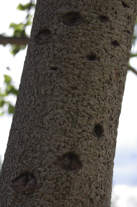
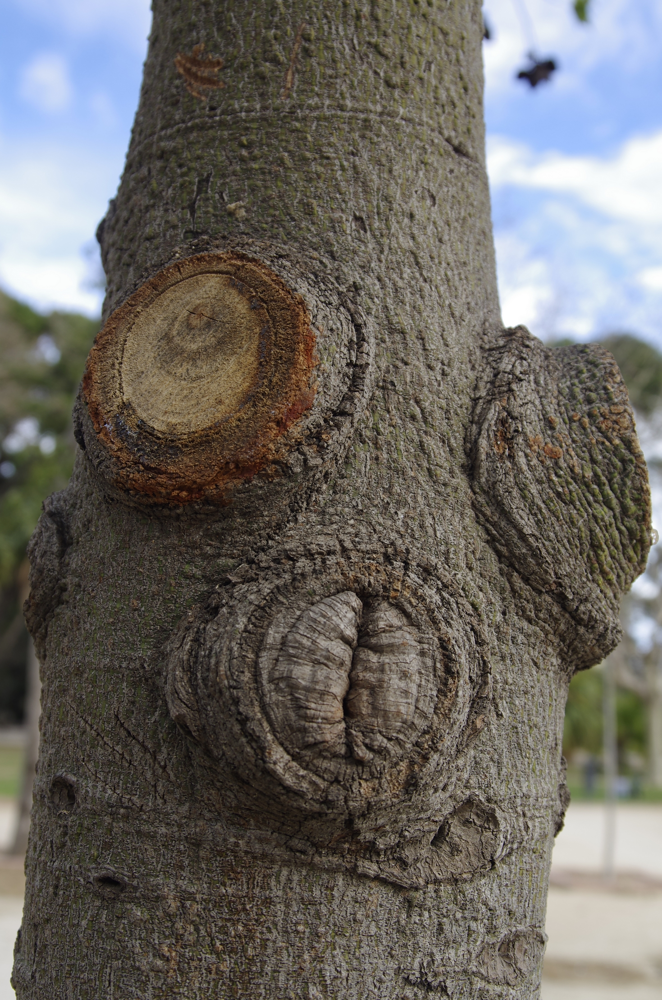
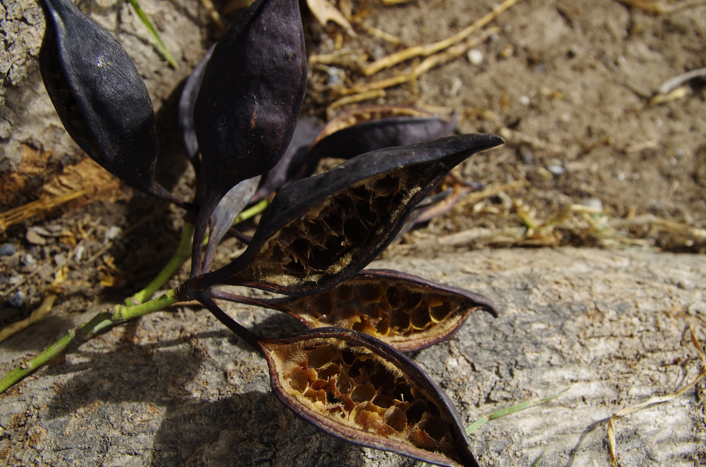

Brachychiton populneus R. BR. Braquiquito
¿Sabías que el Braquiquito puede presentar un tronco de color verdoso? Esto es así porque se recubre de clorfila (el pigmento que capta la luz en las plantas para realizar la fotosíntesis), para poder captar la mayor cantidad de luz posible, ya que es oriundo de Australia y allí necesita captar toda la luz posible ya que convive con otras plantas muy altas que le pueden robar la luz.
En el caso del Brachychiton populneus, el tronco suele encontrarse de color gris o gris verdoso (aquí no tiene esos vecinos competitivos que le puedan robar luz). Es muy recto, cilíndríco y alto, para buscar y obtener toda la luz posible.
También suele engrosar la base del tronco para almacenar agua en la época de sequía y suele disponer sus hojas (las cuales varían mucho según la especie) de forma perpendicular a los rayos solares, (de nuevo para captar más cantidad de luz).
Si tienes la suerte de ver un Braquiquito joven a diario podrás observar como el lado de su tronco, o de sus ramas, de cara al sol, van adquiriendo un color verdoso (no cambia de color, sino que se recubre de clorofila, la cual vemos verde, para captar toda la luz posible de nuevo).
Si ves colgando de sus ramas, o a sus pies en el suelo, un fruto abierto y relleno de pequeñas semillas amarillas o negruzcas, ve con cuidado pues los pelos que se encuentran dentro suelen ser urticantes (que causan picor).
Dada su belleza y la buena sombra que puede llegar a dar, es un árbol muy estimado en parques y por ello se suele cruzar con otras especies de Braquiquito para obtener así híbridos ornamentales.

Para acabar, decimos que también es un árbol común porque el B. populneus es la especie más diseminada de todo el género Brachychiton, tanto por Ámerica del Norte y España. Así pues, este árbol de nombre tan amigable no deja de recordarnos que proviene de un lugar con diferentes biomas y que con tiempo y paciencia ha sabido sobrevivir y prosperar en todos ellos.
¿Por qué crees que el Braquiquito abre el fruto cuando está maduro? Si quieres comprobar cuanto sabes del Braquiquito selecciona a continuación tu nivel educativo